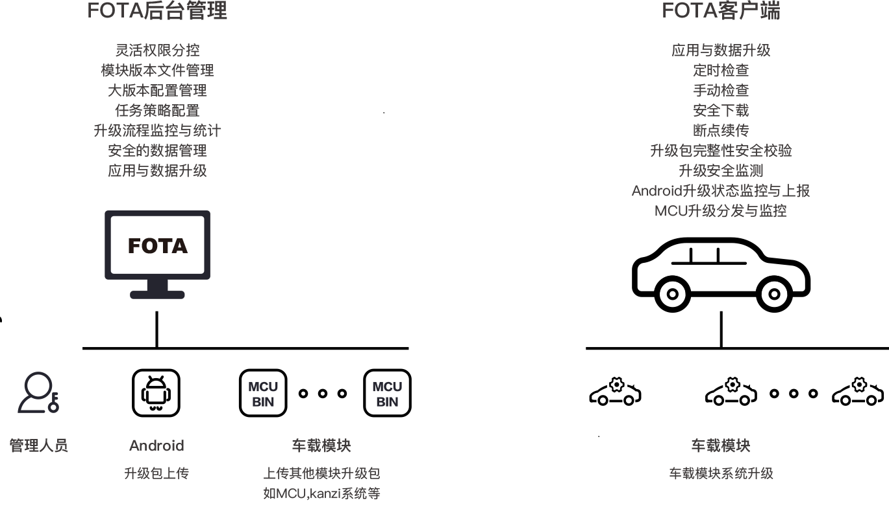
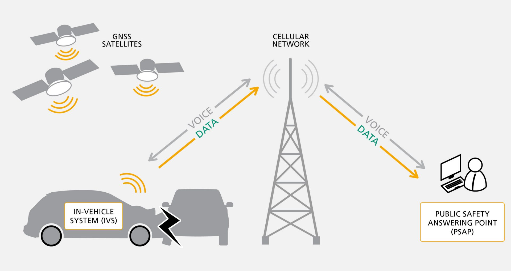
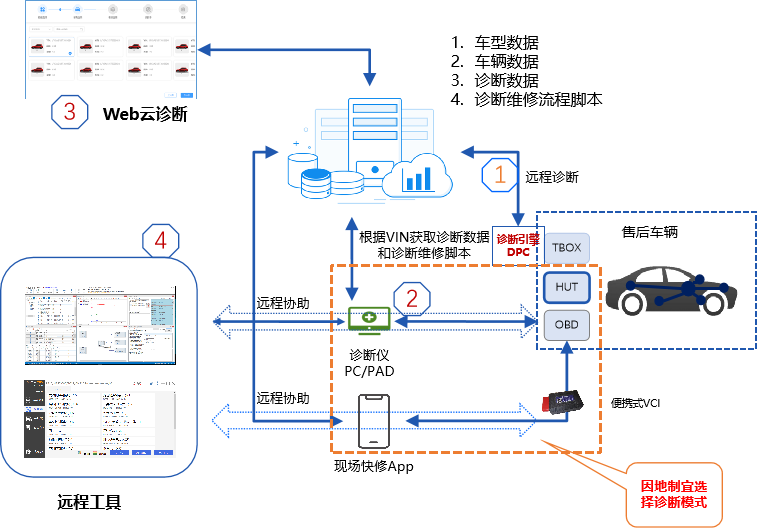
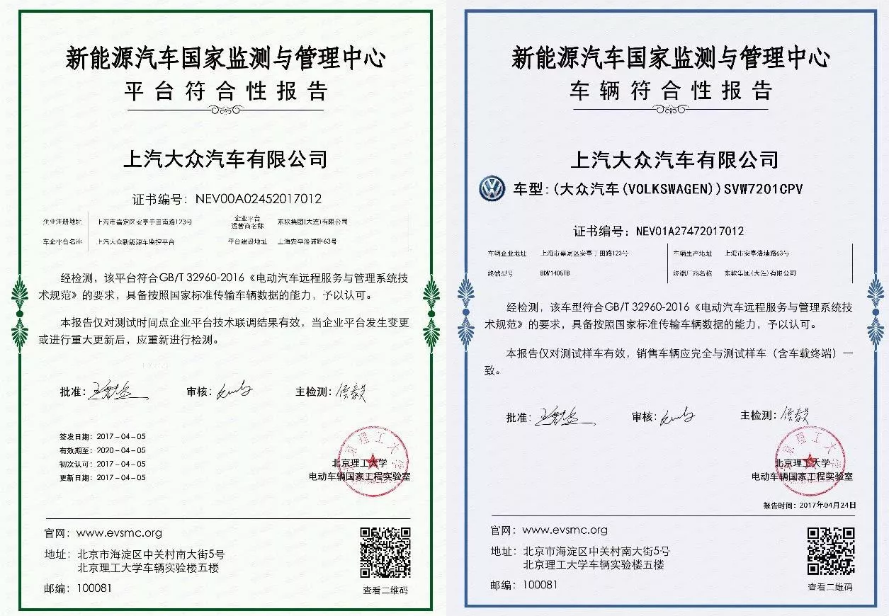
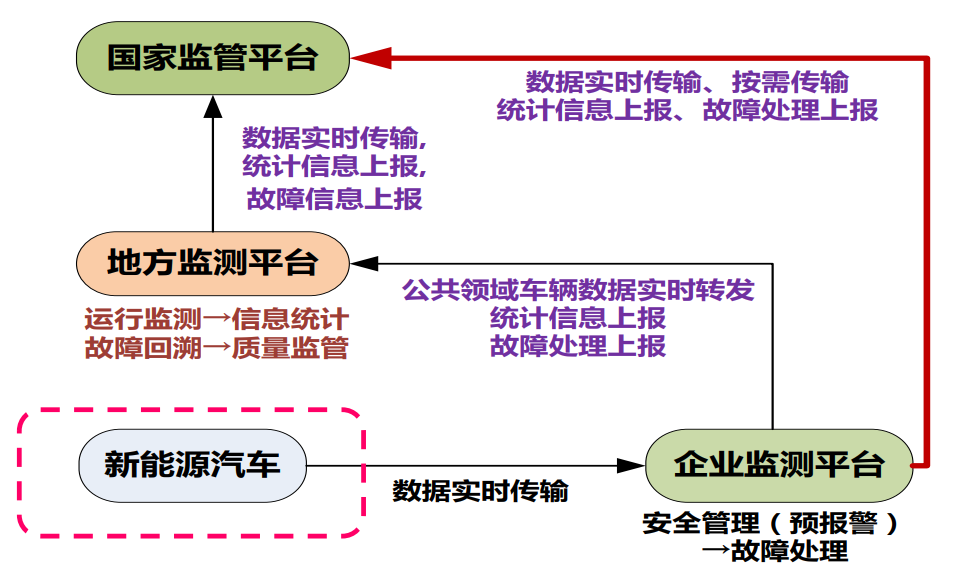
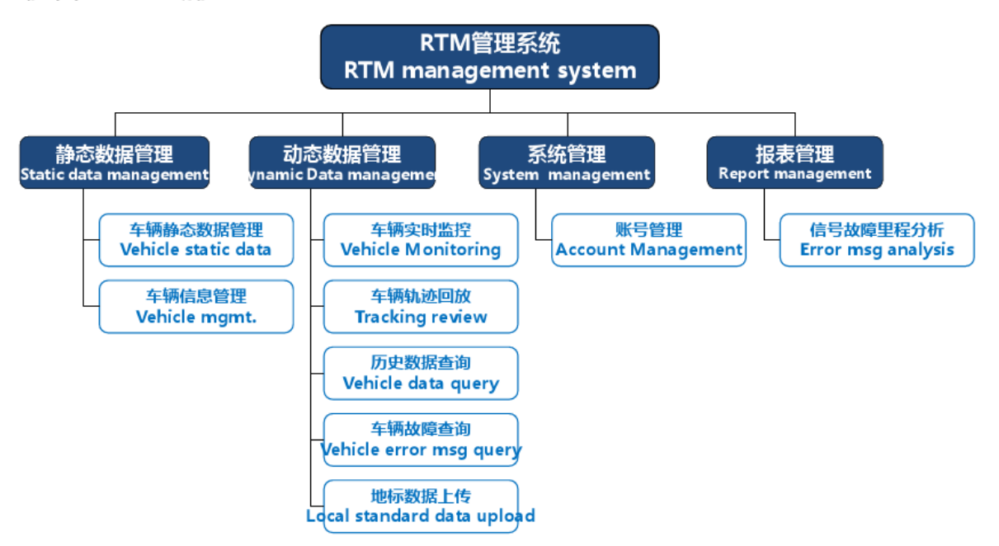

车联网安全基础知识之TBOX主要功能
车联网安全基础知识之TBOX主要功能
Telematics BOX，简称 T-BOX，也称远程信息处理控制单元（Telematics Control Unit, TCU），集成GPS、外部通信接口、电子处理单元、微控制器、移动通信单元和存储器等功能模块。
TBOX 提供的功能有网络接入、OTA、远程控制、位置查询/车辆追踪、电池管理、位置提醒、eCall、远程诊断、平台监控/国家监管等。
网络接入
作为车端与车联网连接的入口，给车机等提供上网服务。
OTA
传统更新汽车软件的做法是到 4S 店通过 OBD 对相应的 ECU 进行软件升级、通过 USB 等接口对信息娱乐系统进行升级。伴随着智能汽车的发展，本地升级已不再适应高速变化的车载生态，当下 OTA 在汽车也得了广泛的应用。
汽车远程升级（Over-The-Air，OTA），指替代线缆或者其它本地连接方式，通过无线传输方式进行软件下载和软件更新的过程。OTA 常见类型包括SOTA（Software OTA，应用软件升级）和COTA（Config OTA，配置更新）、 FOTA（Firmware OTA，固件升级）。通过 OTA 能够为车端添加新功能、修复漏洞等。
SOTA: 软件升级，面向车载端上的应用软件升级。
COTA: 配置升级，面向车端端上的配置升级。
FOTA: 固件升级，面向车端上的固件升级，实现对对动力域、底盘域、辅助驾驶域、信息娱乐域和车身域在内的重大功能更新。
OTA 主要涉及两端，后台管理和客户端。后台管理包括升级包上传、版本控制、升级流程监控与统计、应用与数据升级等；客户端包括定时检查更新、手动检查更新、安全下载、断点续传、升级包校验等。

当下也涌现一批 OTA 解决方案供应商 ，如艾拉比、科络达、红色石头、INTEST、Excelfore eSync、哈曼、弗吉亚、安波福等。目前 OTA 国家强制标准《汽车软件升级 通用技术要求》也在制定之中。
远程控制
使用移动应用程序控制车门开关、调节空调等。手机应用首先将指令发给服务端，然后服务端将指令交由 TBOX 来执行，TBOX 通过主连接器上的 CAN 总线等将指令传送给 ECU 执行。
位置查询/车辆追踪
提供车辆的实时定位信息，可通过手机应用查询车辆的实时位置以及历史轨迹。
电池管理
对电池的实时监控、管理、维护。
位置提醒
为车主提供维护保养、驾驶风格建议，提高用户车主的用车体验。
eCall
eCall(Emergency Call，紧急呼叫) 包括道路救援、自动碰撞通知(ACN)等。
欧盟在 2017 年底强制要求所有的上市新车配备汽车紧急呼叫系统 eCall。国际标准（ETSI TS 126 267,）规范了 eCall 数字通道传输 MAD (Minimum Set of Data，最小数据集）包括位置、车型和事故严重度的数据格式，以及同步语音通道与 PSAP（Public Safety Answer Point，公共安全应答中心）的呼叫优先级。
eCall 支持手动触发、自动触发两种方式。手动 eCall 功能可通过实体按键（车顶的一个红色按钮，通常标记为SOS）触发；自动 eCall 功能指车辆发生碰撞后安全气囊弹出的情况下，TBOX 接收碰撞信号后自动拨通救援电话的一种功能。eCall 拨通后，后台会根据车辆位置，及时提供安排相应的救援服务。

eCall 是欧洲标准，俄罗斯也推出了类似方案 ERA GLONASS。国内方面，目前并相关无强制法规要求。
远程诊断
指汽车在启动时，获知汽车的故障信息，并把故障码上传至数据处理中心。系统在不打扰车主的情况下复检故障信息。在确定故障后，并实施远程自动消除故障，无法消除的故障以短信方式发送给车主，使车主提前获知车辆存在的故障信息，防范于未然。既车辆不用返回 4S 店，对车身控制系统、车载系统等进行升级快速修复系统缺陷。在数据采集分析基础上，通过增加无线通信设备，实现数据远程上传到云端服务器，分析人员从云端服务器下载数据后分析。 基于远程软件控制经销商诊断设备诊断车辆，同时可以通过摄像头、话筒等设备获得维修现场音像信息。

平台监控/国家监管
利用已经安装在车辆上的车载通讯单元（ TBOX）实现将国家要求的高压电相关静态数据、动态数据和故障状态实时传输到政府平台。 相应的国家标准为 《GB/T 32960-2016 电动汽车远程服务与管理系统技术规范》，从2017年4月1日起，所有新能源汽车必须强制实行国标 GB/T 32960。平台和车型通过认证的证书如下。

新能源汽车上的数据实时传输给企业安全检测平台，然后由企业平台上报地方监管平台和国家监管平台。

企业监测平台一般称之为 RTM(实时监控)系统。RTM 系统发送信息的路径，FCM(Forward Collision Mitgation system,前方碰撞预防辅助制动系统) 负责收集 4 路 CAN 线的信息，过滤后通过 RTM-CAN 发送给 TBOX3，最后 TBOX3 通过天线将信号发送到后台服务器。

总结
本文总结了 TBOX 的主要功能，原本是下一篇文章 车联网安全基础知识之大众J949(TBOX/TBOX) 中的一部分。原文太长，看起来太累，于是拆分成了两篇。下一篇将在不久后发出。
现在很多做车联网安全的主要精力停留在攻破系统上，在对业务漏洞的挖掘上往往不够深入。不深入的原因是多种多样的，一是测试时间往往较短，没有时间对业务进行完整的检测。另一方面缺乏厂商配合，很多检测项目很难开展。最后还与测试人员对业务的了解程度有关，当前车联网安全仍处于早期，有很多知识测试人员未必掌握。作为在车联网安全一线上的我，当然要充实自己。于是写这篇文章，梳理 TBOX 主要的业务，为后续安全检测和漏洞挖掘打好基础。
参考
- 安全OTA
- 汽车OTA
- 配套供应商 | 汽车OTA服务
- DOTA - 产品方案
- 汽车软件升级 通用技术要求 立项
- 6大供应商的汽车软件空中升级（OTA）技术有何异同？
- 汽车远程故障诊断
- 新能源车型RTM介绍
- 科普 汽车紧急呼叫系统 eCall
- 新能源汽车国家监测与管理中心
- 国家标准全文阅读|标准检索 32960
- 混合动力和新能源车辆装备的RTM系统你了解多少?
- IZT Signal Generators ready for testing eCall-Systems - IZT GmbH